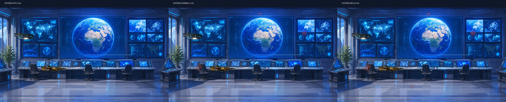
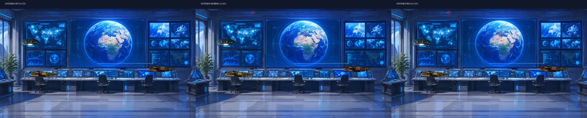
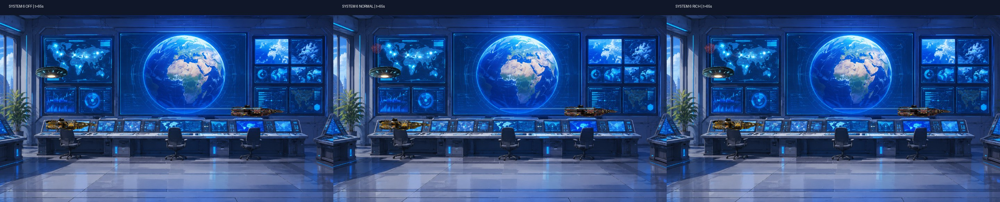

EXPERIMENTAL / QA NOT PASSED. Captured from the existing Golden Passage editable preview in Unity 6000.7. The visible background unexpectedly appears as a blue control room, not the intended Saturn space scene. System 6 changes less than 1% of pixels in all examined frames. This is not an approved film render or proof of visual enrichment.
Same camera, same time and same source render; only System 6 density changes. OFF / NORMAL / RICH from left to right.

OFF vs RICH: 0.628% pixels changed.

OFF vs RICH: 0.355% pixels changed.

OFF vs RICH: 0.178% pixels changed.
Interpretation: builder attachment, deterministic time seeking and density toggling work, but the visible effect is not substantial and the preview environment needs correction. No movie or story changes were committed for this test.